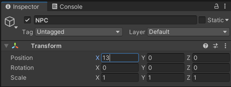

충돌체와 트리거
충돌체 (Collider)
충돌체란?
충돌체는 유니티 컴포넌트 입니다.
충돌체는 모양에 따라 BoxCollider, SphereCollider, CapsuleCollider 등이 있습니다.
충돌체는 오브젝트간의 충돌 을 제어합니다.
충돌체 큐브 생성
이번 테스트부터는 제페토 기본 설정 이 완료된 상태에서 시작합니다.
Plane 의 Position 은 (0, -0.5, 0), Scale 은 (5, 1, 5) 로 설정합니다.
메뉴를 통해 큐브를 하나 생성합니다.
메뉴를 클릭하면, 위치가 (0, 0, 0)으로 초기화 됩니다.
초기화 이후에, (0, 0, 0)은 캐릭터가 생성되는 위치이기 때문에, Position 의 x나 z 값을 변경하여 거리를 벌려줍니다.
메뉴를 선택하여, 큐브에 입힐 머티리얼을 하나 추가해 줍니다.
에서 눈에 띄는 색상으로 변경해 줍니다.
큐브 오브젝트의 에 생성한 머티리얼을 드래그 하여, 머티리얼을 적용시킵니다.
큐브에 머티리얼이 적용되고, 자세히 보시면 외곽에 연두색 선이 보입니다.
큐브는 생성 시, Box Collider 가 기본으로 추가되어 있습니다.
충돌체 확인하기
유니티를 실행하고 생성한 큐브의 위치로 캐릭터를 이동합니다.
큐브 쪽으로 계속 이동해도, 큐브에 막혀서 이동되지 않습니다.
이처럼, 충돌체는 플레이어이 이동을 막는 벽 역할을 합니다.
트리거
큐브 구조 변경하기
메뉴를 선택하여, 빈 오브젝트를 추가합니다.
빈 오브젝트의 이름을 NPC 로 변경하고 Position 을 초기화 해 줍니다.
윈도우에서 Cube 를 드래그하여, NPC 하위로 이동시킵니다.
하위 구조로 변경되면 큐브의 Position 은 상대 좌표가 되어, (0, 0, 0)으로 변경해야 NPC 와 같은 위치가 됩니다.
 NPC 의 위치를 다시 원점과 떨어뜨려 놓습니다.
실행 시, NPC 하위 구조로 변경하기 전과 동일한 상황입니다.
트리거로 변경하기
NPC 에 를 선택하여, 충돌체를 추가해 줍니다.
충돌체의 Size 를 (3, 3, 3)으로 변경합니다.
큐브 외곽에 더 큰 연두색 선이 보입니다.
실행 시, 더 커진 충돌체 만큼 이동이 불가합니다.
NPC 의 충돌체를 를 체크하여 트리거 충돌체로 변경합니다.
이제 크기가 큰 NPC 의 충돌체는 이동이 막히지 않고, 큐브에서만 이동이 불가합니다.
트리거 탐지하기
NpcPlayer 라는 이름의 스크립트를 하나 생성합니다.
- import { Collider } from 'UnityEngine'; import { ZepetoScriptBehaviour } from 'ZEPETO.Script' export default class NpcPlayer extends ZepetoScriptBehaviour { OnTriggerEnter(collider: Collider) { console.log("OnTriggerEnter!!!"); } OnTriggerExit(collider: Collider) { console.log("OnTriggerExit!!!"); } }
OnTriggerEnter, OnTriggerExit 메서드를 추가하고, 로그를 심어줍니다.
NPC 오브젝트에 NpcPlayer 스크립트를 드래그하여, 추가해 줍니다.
캐릭터로 NPC 오브젝트 근처를 들어갔다 나왔다를 반복합니다.
트리거 영역을 들어갈 때마다 OnTriggerEnter, 나올때 마다 OnTriggerExit 가 호출되어 로그가 출력되는 것을 확인 할 수 있습니다.